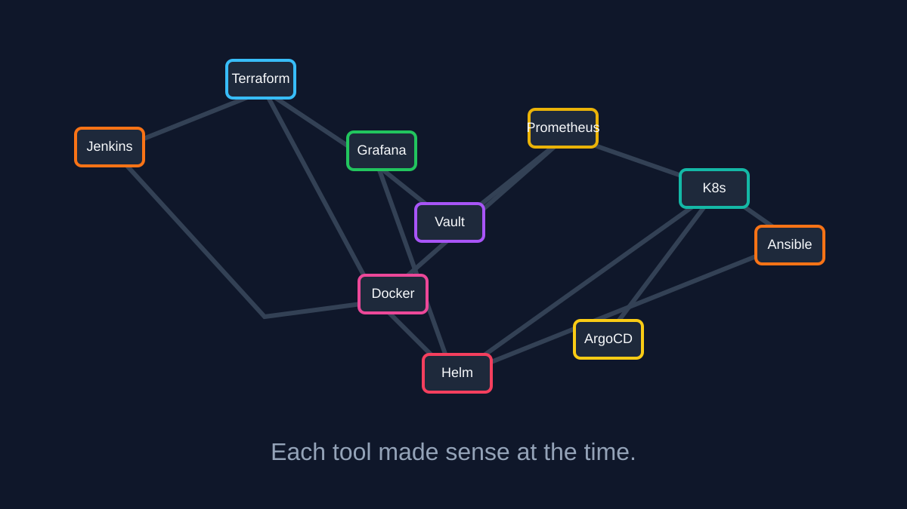
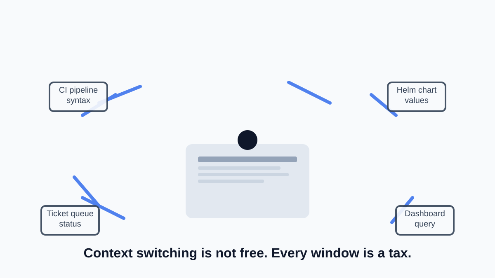
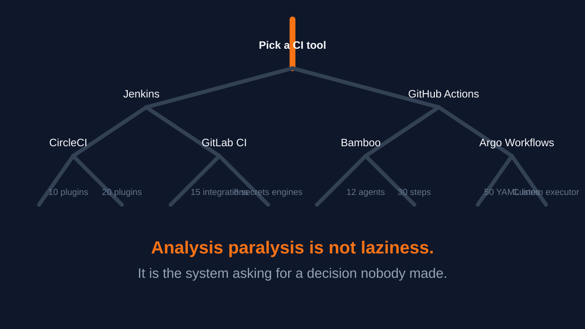
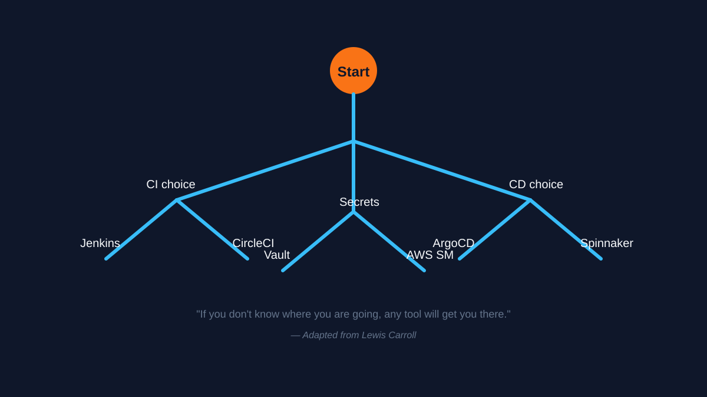
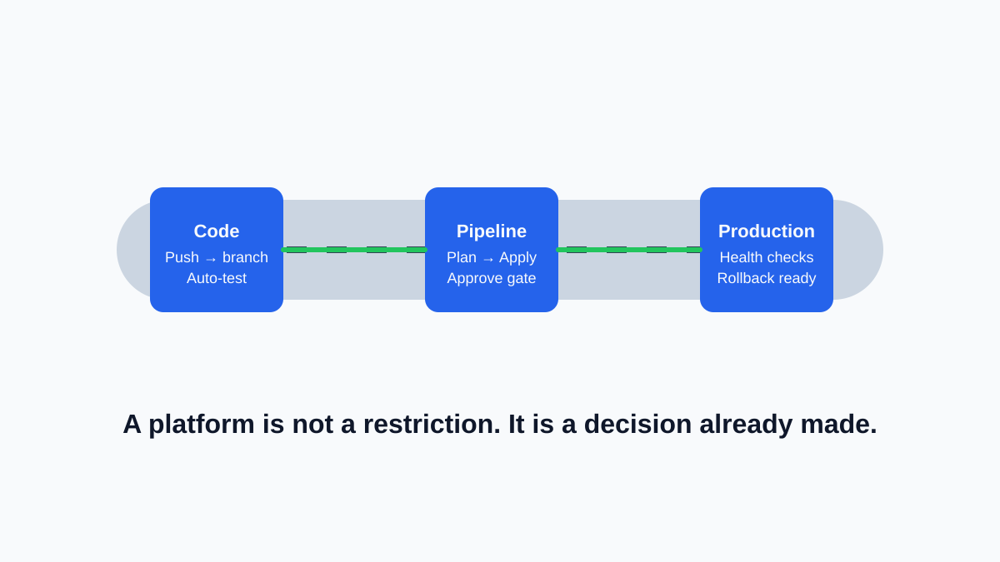

Part 2 of the DevOps Dirty Dozen Series: Non multa, sed multum — not many, but much.
Insight: An excess of tools fragments focus. Depth and coherence matter more than choice.
DevOps was supposed to simplify delivery. Instead, it has delivered a paradox: the more tools we adopt, the less we seem to accomplish. Teams spend more time evaluating, configuring, and integrating tools than shipping value. The promise of “best in class” per category has produced stacks that no single person fully understands.
In this second article of the DevOps Dirty Dozen, we examine tool overload — how it happens, why it persists, and how to reclaim focus without sacrificing capability.
Originally published on LinkedIn.

Each tool made sense at the time. Together, they become something nobody owns.
The Anatomy Of Tool Overload
Tool overload is not simply having too many tools. It is what happens when tool diversity outpaces the team’s ability to maintain coherence. Here is what it looks like:
- Duplicated capability: Three monitoring tools, two CI systems, four secrets management approaches — each justified by a different team or season.
- Context fragmentation: Engineers context-switch between a dozen UIs and CLIs just to push a single change from commit to production.
- Integration debt: Every tool needs to talk to every other tool. The glue code, webhook wiring, and credential exchange become the real infrastructure.
- Onboarding friction: New team members do not learn one system. They learn eight. And the seventh was already deprecated by the second week.
These patterns do not look broken on day one. They accumulate.

Context switching is not free. Every window is a tax on mental bandwidth.
The Cost Of Tool Overload
Tool overload does not fail loudly. It erodes quietly.
- Cognitive load compounds: Each tool brings its own syntax, domain model, error messages, and failure modes. Switching between Terraform HCL, Helm templates, Prometheus recording rules, and Concourse pipeline YAML costs mental energy that never goes to problem-solving.
- Onboarding slows to a crawl: A new engineer does not need to learn a stack. They need to learn a constellation. The undocumented quirks — that one pipeline only works with a specific image tag, this dashboard breaks if the namespace is too long — live in institutional memory, not documentation.
- Incident response degrades: When everything breaks at 2 AM, the on-call engineer must decide which of five monitoring tools to trust, which of three log sources to query, and which runbook applies to a stack that has not been touched in six months.
- Security surface area expands: Every integration point between tools is a potential misconfiguration. Every unused tool with default credentials is a finding waiting to be discovered.
- License and maintenance costs multiply: Teams pay for overlapping SaaS seats, maintain bespoke integration scripts, and carry the operational burden of software they barely use.

Analysis paralysis is not laziness. It is the system asking for a decision nobody made.
A Real-World Example: The Microservices Monitoring Spiral
Consider a team that starts with Prometheus and Grafana for monitoring. A solid choice. Then a team member attends a conference and discovers Datadog. It looks simpler. Management approves a trial. Now there are two monitoring systems.
The Prometheus setup has custom alerting rules tuned over two years. The Datadog trial has a cleaner UI but does not cover everything. Neither gets fully decommissioned. Both require maintenance. Some dashboards are in Grafana, some in Datadog. The on-call rotation checks both during incidents, because nobody is sure which one has the complete picture.
A year later, a third tool appears for tracing. A fourth for logs. Each justified on its own merits. The team now maintains four observability systems, none of which are authoritative.
This is not a tool problem. It is a governance problem that looks like a tool problem.
Why Tool Overload Occurs
Tool overload does not happen because teams are undisciplined. It happens because the incentives favor addition over subtraction.
- No decision is a decision: When there is no clear standard for tool selection, every team makes its own choice. The result is fragmentation without anyone intending it.
- Addition is rewarded: Adding a tool feels proactive. It shows initiative. Removing a tool feels risky and generates no visibility.
- Vendor gravity pulls hard: Sales cycles, conference demos, and proof-of-concept trials create momentum that is easier to start than to stop.
- Fear of missing out: The ecosystem evolves fast. Teams adopt tools to stay current, even when the current stack works well enough.
- Sunk cost fallacy: Once a tool has been integrated, removing it requires admitting the initial investment was not worth it. Most teams avoid that conversation.

If you don’t know where you are going, any tool will get you there.
Taming The Toolchain
Recovering from tool overload requires intentional subtraction, not just better selection criteria.
- Inventory everything: Before deciding what to keep, document what exists. List every tool, who owns it, what problem it solves, and what would break if it disappeared.
- Define the paved road: Choose one tool per category for the standard path. CI/CD. Monitoring. Secrets. Logging. Teams can deviate, but the default should be clear.
- Retire in parallel: Removing a tool does not mean an overnight migration. It means freezing new usage, documenting the sunset, and setting a removal date within a reasonable window.
- Tie ownership to removal: Every tool should have an owner who is also responsible for its deprecation plan. If nobody owns the sunset, the tool never leaves.
- Measure by outcomes, not tool count: The goal is not zero tools. It is coherence. If the team can ship, debug, and recover without heroic effort, the toolchain is probably right-sized.
Applying Chesterton’s Fence
Before removing any tool, understand why it was added. Chesterton’s Fence principle says: do not remove a fence until you understand why it was put there in the first place.
- Ask why the tool exists: Was it solving a real problem, or was it a trial that never ended?
- Check what depends on it: Integration points, scripts, dashboards, and documentation may rely on a tool that nobody thinks about.
- Understand the removal cost: Sunsetting a tool is not free. The cost of migration, retraining, and runbook updates must be included in the decision.
This is not an argument against change. It is an argument against removal by neglect — treating a tool as dead because nobody remembers why it was added, even when it still serves a purpose.

A platform is not a restriction. It is a decision already made so the team can move faster.
Moving Forward
Tool overload is not solved by finding the perfect tool. It is solved by deciding what matters and standardizing around it. The teams that ship fastest are not the ones with the most tools. They are the ones whose tools fade into the background, letting the work itself take center stage.
What is your experience with tool overload? Which tool in your stack would you remove today if you could?